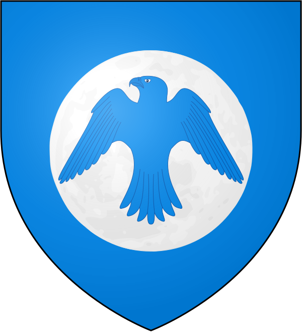
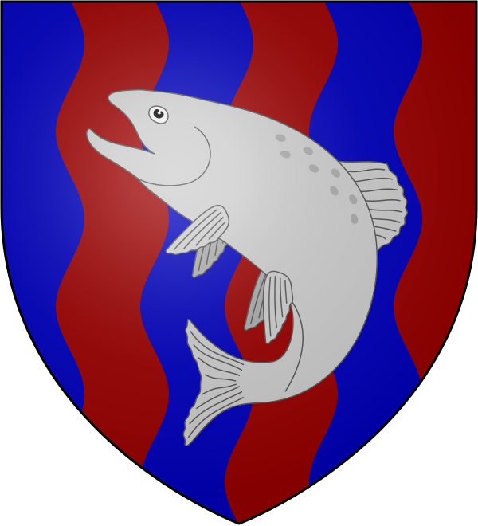
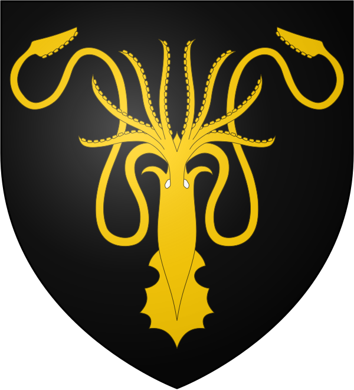
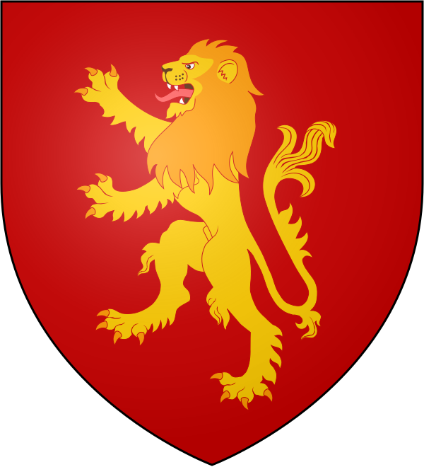

David's "A Song of Ice and Fire" Page v2.0
A Song of Ice and Fire (commonly abbreviated as ASoIaF) is an ongoing series of epic fantasy novels by American novelist and screenwriter George R. R. Martin. Martin began writing the series in 1991 and the first volume was published in 1996. Originally planned as a trilogy, the series now consists of five published volumes; a further two are planned. In addition there are three prequel novellas currently available, with several more being planned, and a series of novella-length excerpts from the main Ice and Fire novels.
The story of A Song of Ice and Fire takes place in a fictional world, primarily on a continent called Westeros but also on a large landmass to the east, known as Essos. Most of the characters are human but as the series progresses others are introduced, such as the cold and menacing supernatural Others from the far North and fire-breathing dragons from the East, both thought to be extinct by the humans of the story. There are three principal story lines in the series: the chronicling of a dynastic civil war for control of Westeros among several competing families; the rising threat of the Others, who dwell beyond an immense wall of ice that forms Westeros' northern border; and the ambition of Daenerys Targaryen, the exiled daughter of a king who was murdered in another civil war fifteen years before, to return to Westeros and claim her rightful throne. As the series progresses, the three story lines become increasingly interwoven and dependent upon each other.
The series is told in the third-person through the eyes of a number of point of view characters. By the end of the fourth volume, there have been seventeen such characters with multiple chapters and eight who only have one chapter apiece. Several new viewpoint characters are introduced by the conclusion of the fifth volume, setting the stage for the major events of the sixth novel.


A Game of Thrones is the first of seven planned novels in A Song of Ice and Fire, an epic fantasy series by American author George R. R. Martin. It was first published on 6 August 1996.
A Game of Thrones follows three principal storylines as they develop in tandem with one another. The most storylines begin in the year 298 AC (After Conquest), whilst the prologue takes place in 297 AC. The story continues for many months, until 299 AC.
A Clash of Kings is the second of seven planned novels in A Song of Ice and Fire, an epic fantasy series by American author George R. R. Martin. It was first published on 16 November 1998 in the United Kingdom, although the first United States edition did not follow until March 1999.
A Clash of Kings picks up the story where A Game of Thrones leaves off. The Seven Kingdoms are plagued by civil war, the Night's Watch mounts a reconnaissance force north of the Wall, and in the distant east, Daenerys Targaryen continues her quest to return to the Seven Kingdoms and claim her birthright. The novel spans most of the year 299 AC (After Conquest).
A Storm of Swords is the third of seven planned novels in A Song of Ice and Fire, an epic fantasy series by American author George R. R. Martin. It was first published on August 8, 2000 in the United Kingdom, with a United States edition following in November 2000.
A Storm of Swords picks up the story where A Clash of Kings ends. The Seven Kingdoms are in the grip of the War of the Five Kings, with Robb Stark, Balon Greyjoy, Renly Baratheon, Joffrey Baratheon, and Stannis Baratheon fighting to secure their crowns, although Renly has already died. Stannis's attempt to take King's Landing has been defeated by the new alliance between House Lannister (backing Joffrey) and House Tyrell, whilst House Martell has also pledged its support to the Lannisters. Meanwhile, a large host of wildlings is marching on the Wall under Mance Rayder, with only the tiny force of the Night's Watch in its path, and in the distant east Daenerys Targaryen is on her way back to Pentos in the hope of raising forces to retake the Iron Throne. The novel begins in the final months of 299 AC and carries on into 300 AC.
A Feast for Crows is the fourth of seven planned novels in A Song of Ice and Fire, an epic fantasy series by American author George R. R. Martin. The novel was first published on October 17 2005 in the United Kingdom, with a United States edition following on November 8 2005; however, it appeared ahead of the publication date in several UK bookshops.
A Feast for Crows picks up the tale where A Storm of Swords leaves off and runs simultaneously with events in the following novel, A Dance with Dragons. The War of the Five Kings seems to be winding down. Robb Stark, Joffrey Baratheon, Renly Baratheon, and Balon Greyjoy are dead. King Stannis Baratheon has fled to the Wall, where Jon Snow has become Lord Commander. King Tommen Baratheon, Joffrey's eight-year-old brother, now rules in King's Landing under the watchful eye of his mother, the Queen Regent Cersei Lannister. Lord Tywin Lannister is dead, murdered by his son Tyrion in his flight from the city. Sansa Stark is in hiding in the Vale, protected by Petyr Baelish who has murdered his wife Lysa Arryn and named himself Protector of the Vale and guardian of eight-year-old Lord Robert Arryn. The novel spans several months of the year 300 AC.
A Dance with Dragons is the fifth of seven planned novels in the epic fantasy series A Song of Ice and Fire by American author George R. R. Martin. Despite original predictions of possible completion in late 2006, the novel was released on July 12, 2011.
A Dance with Dragons picks up where A Storm of Swords leaves off and runs simultaneously with events in A Feast for Crows. The War of the Five Kings seems to be winding down. In the north, King Stannis Baratheon has installed himself at the Wall and vowed to win the support of the northmen to continue his struggle to claim the Iron Throne, although this is complicated by the fact that much of the west coast is under occupation by the ironborn. On the Wall itself Jon Snow has been elected the 998th Lord Commander of the Night's Watch, but has enemies both in the Watch and beyond the Wall. Tyrion Lannister has been taken by ship across the narrow sea to Pentos, but his eventual goals are unknown even to him. On Slaver's Bay, Daenerys Targaryen has conquered the city of Meereen, and has decided to stay and rule the city, honing her skills of leadership which will be needed when she travels on to Westeros. Daenerys's presence is now known to many in Westeros, and from the Iron Islands and Dorne, from Oldtown and the Free Cities, emissaries are on their way to find her and use her cause for their own ends. A Dance with Dragons takes place in the year 300 AC, and partly runs simultaneously with A Feast for Crows, but continues on longer into the year 300 than the previous book did.
The Winds of Winter is the forthcoming sixth novel in the award-winning epic fantasy series A Song of Ice and Fire by George R. R. Martin. It will take place after the concurrent fourth and fifth books in the series, A Feast for Crows (2005) and A Dance with Dragons (2011).
A Dream of Spring is the planned title of the seventh volume of George R. R. Martin's A Song of Ice and Fire series. The book is to follow The Winds of Winter and is intended to be the final volume of the series.

These are the main Houses in Westeros:
| House | Region | Seat | Sigil | Motto |
|---|---|---|---|---|
| Stark | North | Winterfell | Winter is Coming | |
| Arryn | Vale of Arryn | The Eyrie |  | As High as Honor |
| Tully | Riverlands | Riverrun |  | Family, Duty, Honor |
| Greyjoy | Iron Islands | Pyke |  | We Do Not Sow |
| Lannister | Westerlands | Casterly Rock |  | Hear Me Roar! |
| Baratheon | Stormlands | Storm's End |  |
Ours Is the Fury |
| Tyrell | Reach | Highgarden |  |
Growing Strong |
| Martell | Dorne | Sunspear | Unbowed, Unbent, Unbroken | |
| Targaryen | Crownlands (formerly) | Dragonstone (formerly) Red Keep (formerly) |
 |
Fire and Blood |

Westeros is one of the three known continents in the known world, the others being Essos and Sothoryos. Most of the area of Westeros is covered by a political entity known as the Seven Kingdoms, while the far north beyond the Wall includes the free folk. The closest foreign nations to Westeros are the Free Cities, a collection of independent city-states across the narrow sea in western Essos. To the south of Westeros lie the Summer Isles.
The northernmost region of Westeros, the lands beyond the Wall stretch north to the lands past the edge of the known map, known as the Land of Always Winter. For the most part it is covered by the haunted forest and comprised of many lakes and rivers, and it shelters strange beasts among the mountains of the Frostfangs. The far north presents an extremely harsh climate, allowing only small numbers of free folk in small villages, in those primarily wild and uncharted lands.
The north is the largest region, nearly as large as the rest of the regions combined. It is sparsely populated, with vast wilderness, forests, pine-covered hills and snowcapped mountains, although it also is home to one of the five Westerosi cities, White Harbor. The northern climate is cold and harsh in the winter, and occasionally it snows even in the summer. Its northern border is the Gift, the lands of the Night's Watch. Its southern frontier lies along the Neck, a marshy isthmus separating it from the southron kingdoms. The narrowness of the region and the difficulty of the terrain make it a natural border for the north, protecting it from invasion.
The Iron Islands are an archipelago lying off the western coast of Westeros in Ironman's Bay, the largest isles being Blacktyde, Great Wyk, Harlaw, the Lonely Light, Old Wyk, Orkmont Pyke, and Saltcliffe. The soil is infertile, but there are mines of several types, including iron and lead. The inhabitants of the harsh archipelago are known as ironmen in the rest of Westeros, and the ironborn among themselves.
The riverlands, located south of the Neck, are the fertile areas between the Red, Green, and Blue Forks of the Trident, as well as the Gods Eye and much of the Blackwater Rush. They are the domain of the Tullys of Riverrun. At the time of the Conquest, the riverlands were ruled by House Hoare, the Kings of the Isles and the Rivers. The Tullys were never river kings, but were rebel river lords who left Harren the Black in favor of Aegon the Conqueror. Although the riverlands lack a city, they have many large towns, such as Maidenpool and Fairmarket. People of this region are often called "rivermen". Bastards in the riverlands are given the surname Rivers.
The Vale of Arryn lies to the east of the riverlands, surrounded almost completely by the Mountains of the Moon. It consists of vast mountain ranges with the people living in valleys between them, such as the Vale proper, and along the coast. The Vale's territory also includes the city of Gulltown, the Fingers, and numerous islands in the Bite and along the narrow sea.
The westerlands are the lands to the west of the riverlands and north of the Reach. It is a smaller region, but is home to some of the richest gold and silver mines on the continent.
The crownlands are lands ruled directly by the Lord of the Seven Kingdoms. These lands include King's Landing and the surrounding areas, including Duskendale and Rosby. Going north, one finds Crackclaw Point and several islands in the narrow sea and Blackwater Bay, including Dragonstone, Driftmark, and Claw Isle. The crownlands are south of the Vale, southeast of the riverlands, and northeast of the Reach, and north of the stormlands. Bastards in the crownlands are given the surname Waters.
The Reach is the largest region except for the north; it encompasses a region of the most fertile part of Westeros and numerous well-populated villages and towns.
The stormlands, located south of King's Landing, stretch down to the Sea of Dorne and are bordered by Shipbreaker Bay in the east and the Reach in the west. It is one of the smaller regions of Westeros, a land of harsh mountains, stony shores, and verdant forests.
Dorne is the southernmost region of Westeros. It stretches from the southern Red Mountains near the Dornish Marches to the southern coast of the continent. It is the hottest kingdom in Westeros and features the only desert on the continent. Dornishmen have a reputation for hot-bloodedness as well. They differ both culturally and ethnically from other Westerosi due to the historical migration of the Rhoynar on ten thousand ships. Their food, appearance, and architecture resemble those of Mediterranean cultures such as Greece and Turkey more than the Western European feel of the other kingdoms. They have adopted many Rhoynish customs as well, including equal primogeniture.

A Wiki of Ice and Fire is a fan-based wiki, dedicated to George R. R. Martin's created universe, covering the Novels, HBO's Game of Thrones TV series and other sources. Their goal is to build that wiki into as complete and comprehensive a guide of that universe as possible.
A Wiki of Ice and Fire is (in my opinion) the best fan-based website about George R.R. Martin's A Song of Ice and Fire Universe. Visit the website if you want to learn more about it!
This is George R.R. Martin's official website. Check it out!
DEVF is the school in which (as of August, 2024) i'm studying Web Development. Check it out!
W3Schools is a website where you can learn to code (HTML, CSS, JS, SQL, etc.). Check it out!
Hi! My name is David. I'm from Mexico. I studied law at the Universidad Nacional Autónoma de México (Facultad de Estudios Superiores Acatlán) from 2005 to 2010. I've worked as a lawyer since 2010 and until April 30, 2024. On 2023, I decided to make a radical turn in my life and to start a new path in programming. I've always liked computing, so now I'm studying Web Development.
This is the website i created for my final project in Web Development (Module 2/8). It's a simple website in HTML and CSS.
Want to contact Me? Leave your info here!